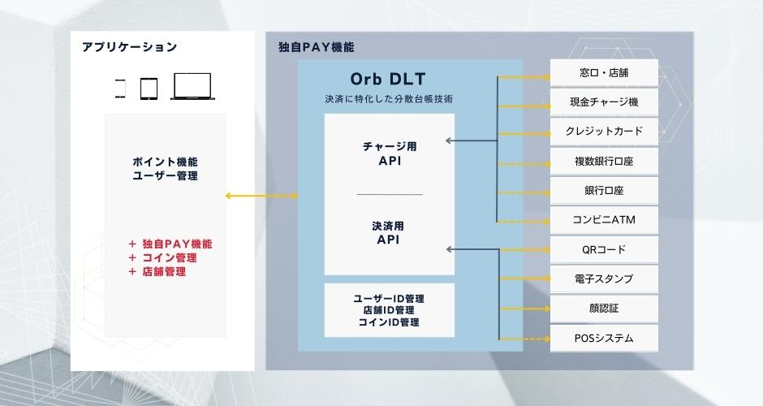

01
決済に特化した独自の分散台帳技術
(DLT : Distributed Ledger Technology)
私たちOrbは独自通貨プラットフォームの開発を目指していたため、その開発基本方針は、金融決済システムにおける耐改ざん性や可用性などの高いセキュリティ要件を満たすために、ブロックチェーンなどの分散台帳技術を活用することでした。しかし、ブロックチェーンでは十分な処理スピード（ファイナリティが即座にできないことを含む）を実現できないと判断し、そのブロックチェーンの強みである耐改ざん性や可用性を具備しつつ、決済に足る処理スピードと拡張性を実現する独自の分散台帳技術を開発しました。
02
難易度の高いデジタル通貨の
決済システムを安価に容易に構築可能
決済システムは、耐改ざん性、可用性、拡張性、更には即時性、正確性を求められます。それらを高いレベルで実現するOrb DLTをプラットフォームとして利用することで、難易度の高い金融決済システムの構築コストと運用リスクを激減させることができます。
また、デジタル通貨は、複雑な振る舞いの設定やトランザクションの処理が必要となります。その複雑な設定や処理を柔軟に設定し、且つ容易に実装できる仕組みも大きな特徴の一つとなっております。
Orb DLTでは、以下のようなデジタル通貨の振る舞いを柔軟に設定することが可能です。

尚、複数の通貨を同一基盤上で実装可能です。独自通貨、独自コイン、電子マネーなどを複数発行管理でき、通貨間の交換の設定も可能となります。
03
アプリケーション開発者が様々なユースケースに対応可能な
ミドルウェアとしての提供
Orb DLTの構成概要は、下図の通りです。

Orb DLTは、フロントアプリケーションの開発者向けに、決済やチャージなどの実装に必要となるAPIを提供しています。
提供されているAPIの概要
■チャージ用API
・窓口・店舗(QRコード)
・現金チャージ機：グローリー社製
・クレジットカード：GMO-PG社、STORES社(旧Coiney社)
・複数銀行口座：都銀5行を含む全国140以上の銀行からチャージ可能なサービス「Bank Pay」(開発中)
・窓口・店舗(QRコード)
■決済用API
・QRコード
・電子スタンプ：ギフティ社製
・顔認証：NEC社製
今後も市場のニーズを捉え、各種APIの開発を進めております。これらのAPIライブラリは、開発者向けポータルにて公開しております。